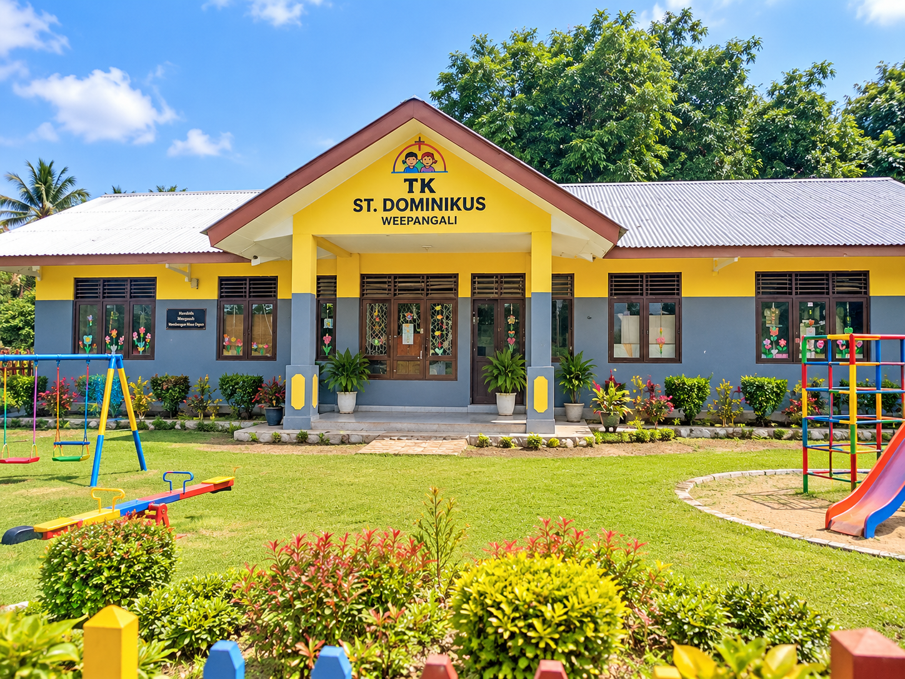

Tentang TK St. Dominikus Weepangali
Rumah kedua yang aman, nyaman, dan menyenangkan bagi tumbuh kembang anak.

Pondasi Emas Masa Depan Buah Hati
Pendidikan anak usia dini merupakan pondasi terpenting dalam pembentukan karakter seorang individu. Berangkat dari kesadaran mendalam serta rasa mencintai, menyayangi, dan memiliki kepedulian yang besar terhadap anak-anak di wilayah Weepangali dan sekitarnya, TK St. Dominikus didirikan untuk menghadirkan atmosfer pembelajaran yang penuh sukacita.
Kami berfokus pada pendampingan holistik: memadukan pembiasaan moral Kristiani, rasa takut akan Tuhan, etika kesantunan bertutur kata, serta stimulasi motorik dan kognitif yang seimbang melalui konsep bermain sambil belajar, belajar seraya bermain.